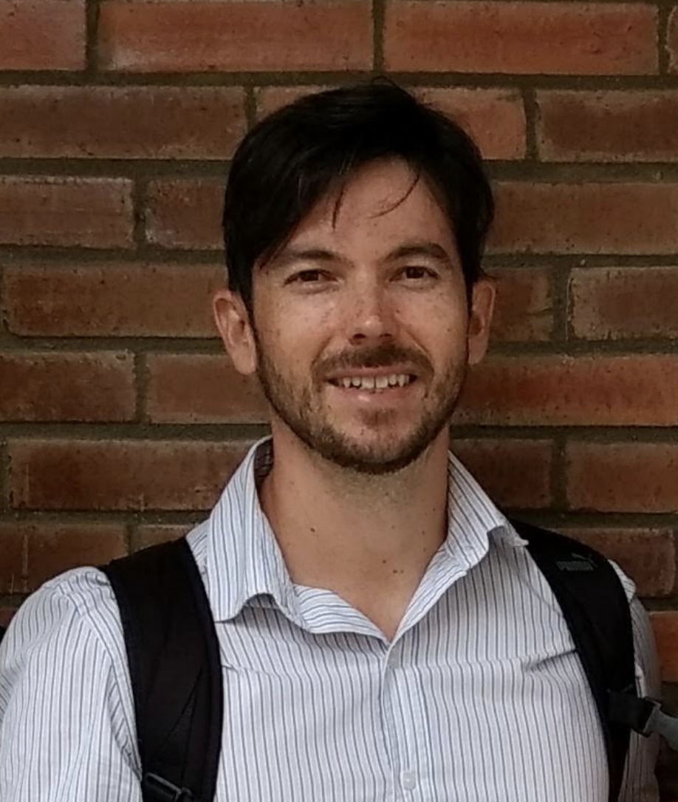
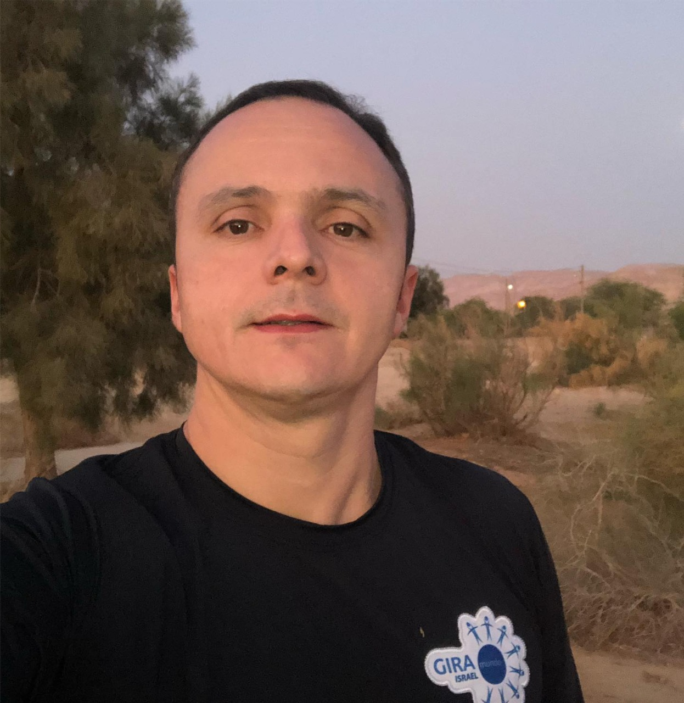
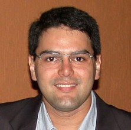
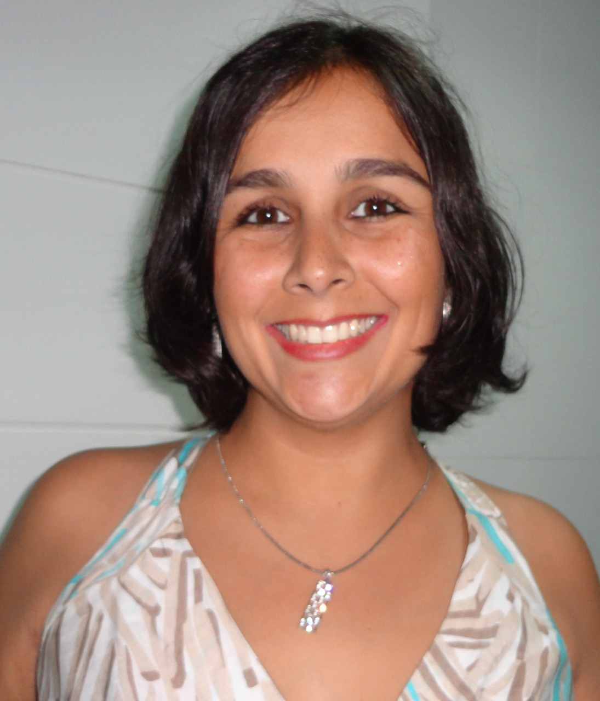

Ciclo de Palestras
✻
Especialistas e referências em diversas áreas

José Adson Oliveira Guedes da Cunha
O que a Computação pode aprender com a Economia Comportamental?
Professor Adjunto do Departamento de Ciências Exatas da Universidade Federal da Paraíba. Graduado em Ciência da Computação pela Universidade Federal da Paraíba, Mestre e Doutor em Ciência da Computação pela Universidade Federal de Pernambuco. Realizou pesquisas, durante o doutorado, no Centro de Estudos de Gestão do Instituto Superior Técnico da Universidade de Lisboa, em Portugal. Atuou por 10 anos em projetos de desenvolvimento de software para o Governo Federal na Empresa de Tecnologia e Informações da Previdência Social (DATAPREV). Tem interesse na área de Sistemas de Informação com ênfase em Processos Organizacionais, Ciência de Dados e Aspectos Humanos e Sociais na Computação.
Marcelo Duduchi
Da Indústria 4.0 à Sociedade 5.0: Desafios e oportunidades em Computação no Brasil
Graduado em processamento de dados pela FATEC São Paulo, especialista em automação industrial pela Escola de Engenharia Industrial, mestre em Neurociências e Comportamento e Doutor em Psicologia Experimental pela USP, atualmente é professor do Centro Estadual de Educação Tecnológica Paula Souza na Faculdade de Tecnologia de São Paulo e no programa de Mestrado Profissional de Gestão e tecnologia em Sistemas Produtivos, Membro da Comissão Assessora do INEP para o ENADE de Cursos de Tecnologia em Análise e Desenvolvimento de Sistemas e Diretor de Secretarias Regionais da Sociedade Brasileira de Computação. .

Francisco Petrônio Alencar de Medeiros
Pesquisa Científica Aplicada - Experiências na Paraíba, no Brasil e no Mundo
Professor Titular e Pesquisador do Instituto Federal da Paraíba (IFPB). Possui graduação em Ciência da Computação pela UFPB (2000), Mestrado em Informática pela UFCG (2003), Doutorado em Ciência da Computação pela UFPE (2013) e Aperfeiçoamento de 540hs em Metodologias e Ferramentas de Aprendizagem Ativa na Tampere University of Applied Sciences, Finlândia (2016). Tem experiência na área de Ciência da Computação, com ênfase em Engenharia de Software e Informática na Educação, atuando nas linhas de pesquisa interação humano computador, educação a distância, aprendizagem analítica, mineração de dados educacionais e metodologias de aprendizagem ativa. Atua em projetos de P&D junto ao Polo Embrapii do IFPB como coordenador e pesquisador junto à empresas nacionais e internacionais. Experiência como coordenador e pesquisador em projetos de pesquisa e extensão financiados por órgãos de fomento como CNPq e Fapesq. Coordenador do Programa de Pós Graduação em Tecnologia da Informação do IFPB.

Allan de Medeiros Martins
Aprendizado de Máquina e Deep Learning
Possui graduação em Engenharia Elétrica (2000), mestrado em Ciências pela Universidade Federal do Rio Grande do Norte (2001) e doutorado em Engenharia Elétrica pela Universidade Federal do Rio Grande do Norte (2005). Estágio pós Doutoural realizado na Universidade da Florida em 2006 na área de Processamento de Sinais. Atualmente é professor Adjunto de Engenharia Elétrica da Universidade Federal do Rio Grande do Norte e realiza estagio pós-Doutoral no Observatório de Genebra na Suíça. Tem experiência na área de Engenharia Elétrica e de Computação, com ênfase em Processamento de Sinais e Sistemas inteligentes, atuando principalmente nos seguintes temas: processamento de sinais e imagens, controle, sistemas inteligentes aprendizado de máquina e Deep-Learning.

Vanessa Farias Dantas
Comunidade Women Techmakers– A União das Mulheres de TI na Paraíba
PÉ mestre em Engenharia de Software pela UFCG, e professora no Campus IV da UFPB, em Rio Tinto, há onze anos. Em 2016, juntamente com outra professora e algumas alunas do campus, criou o projeto IT Girls com a proposta de realizar ações de conscientização, capacitação e pesquisa para incentivar garotas na tecnologia. No final de 2017, foi convidada para assumir a liderança do Women Techmakers (programa global da Google) em João Pessoa, com a missão de promover o protagonismo feminino em tecnologia, realizando eventos e discutindo questões como diversidade e igualdade de oportunidades no mercado.
Márcio Emanuel Ugulino de Araújo Júnior
Cloud Coumputing- Evolução, Modelos e Tecnologias
GRADUADO em Tecnologia em Processamento de Dados, MESTRADO em Engenharia Elétrica e Computação pela UFRN, DOUTORADO em engenharia Elétrica e Computação pela UFRN. Professor do Instituto Federal de Educação Ciência e Tecnologia da Paraíba desde 2002, instrutor da CISCO CCNA, Instrutor HUAWEI Cloud Computing . Coordenador do Curso Superior de Tecnologia em Redes de Computadores.

Enyo José Tavares Gonçalves
PRISE: um processo para criação de extensões de iStar
Professor Adjunto da Universidade Federal do Ceará - Campus Quixadá. Doutor em Ciência da Computação pela Universidade Federal de Pernambuco (2019) em cooperação com a Universidade Nova de Lisboa (Portugal) e University of Ottawa (Canadá), Mestre em Ciência da Computação pela Universidade Estadual do Ceará (2009) e Bacharel em Ciência da Computação pela Universidade Estadual Vale do Acaraú (2007). Atuou profissionalmente como desenvolvedor de sistemas pelo Instituto Atlântico, como professor do curso de Ciências da Computação do Instituto Federal de Educação Ciência e Tecnologia do Ceará e da Universidade Estadual Vale do Acaraú. Tem experiência e interesse em pesquisa envolvendo os temas em i) Desenvolvimento Orientado por Modelos Aplicado à Engenharia de Requisitos e aos Sistemas Multi-agentes;e ii) Educação à Distância.
Marcelo Damasceno de Melo
Biometrias Físicas e Comportamentais: Panorama e Desafios
Atualmente é Professor de Ensino Básico e Tecnológico do Instituto Federal de Educação, Ciência e Tecnologia do Rio Grande do Norte. Possui Doutorado no Programa de Pós Graduação em Sistemas e Computação da Universidade Federal do Rio Grande do Norte e Mestrado em Ciência da Computação pela Universidade Estadual do Ceará (2010). Tem experiência na área de Ciência da Computação, com ênfase em Inteligência Artificial, atuando principalmente nos seguintes temas: Aprendizagem de Máquina, Processo de Mineração de Dados, Ambientes Interativos de Aprendizagem,Criminalidade e Autenticação Biométrica.

Danilo Rangel Arruda Leite
Machine Learning aplicado à Saúde
Formado em Processamento de dados, epecialista em Segurança da Informação, Mestre em Informática, Especializando em Informática em Saúde e doutorando em Modelos de decisão e saúde. Atualmente é Analista de TI no HULW/EBSERH/UFPB e professor da UNIESP. Pesquisador em Aprendizado de Máquina aplicado à saúde.